Create an API in the API Manager
The API Manager console provides a space where you can create APIs by referencing a specification. The new API asset acts as a container for Pipeline, Tasks, Files, and Accounts.

In SnapLogic Project Manager, the API Manager console provides a space where you can create APIs by referencing a specification. The new API asset acts as a container for the following SnapLogic assets.
- Pipeline: The Pipeline is a representation of the API specification and provides the scaffolding of its implementation in the SnapLogic platform.
- Tasks: The URI endpoints used to trigger Pipeline execution.
- Files: A specification file. Both JSON and YAML file formats are supported.
- Accounts: Accounts in Project Manager referenced by Pipelines used in the API.
You can create an API using one of four ways:
- By uploading an Open API Specification (OAS) file (Design First) with either a JSON or YAML file extension.
- By entering a URL that points to an Open API Specification file (Design First)
- By creating an API from an existing project
- By starting with an empty API
The first version is automatically created when you create the API. However, you can create additional versions of your API and manage them.
Prerequisites
- APIM prerequisites for your environment (Org)
- Your API specifications must be based on Open API Specification (OAS) 3.0 or 2.0.
- You must have Write permissions to create an API.
Behavior Change
The Developer Portal no longer displays empty tags added during API Version or Proxy creation in the API details view.
API Manager
To navigate to the API Manager, in Project Manager go to .
APIs and Proxies appear in this list. You can view details about the API or Proxy by clicking it. You can also set permissions on your API.
Known Issue
Lint issues occur when working with reference accounts, associated JAR files, and error pipelines in older Snaplex versions. Workaround - Update the Snaplex to the latest version to resolve the lint issue.
Create the API Using Design First
- In the API Manager page, under the APIs & Proxies tab, click
the add icon and choose New API.
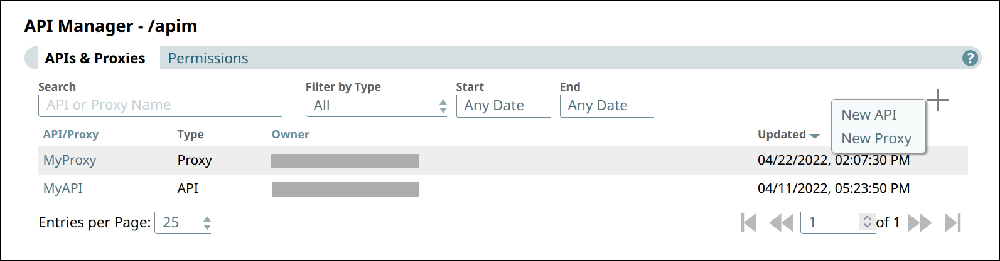
- In Create New API, choose the source of the OAS file.
- Upload File. Click Choose File to specify the location
of the specification file to upload.
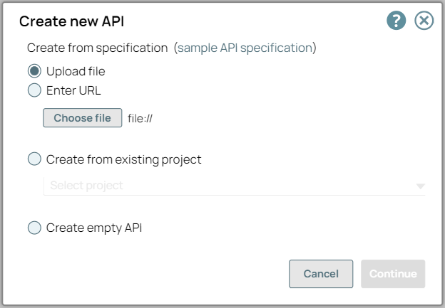
- Enter URL. Enter a valid URL pointing to the location of the specification
file.
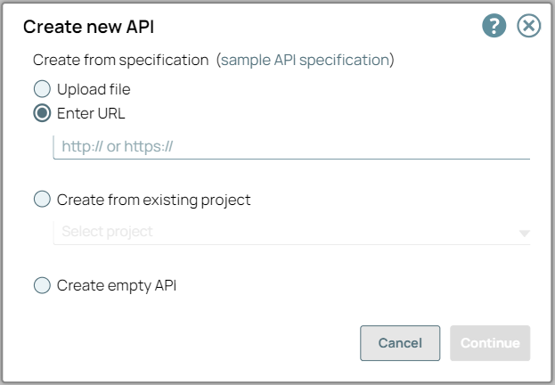
- Upload File. Click Choose File to specify the location
of the specification file to upload.
- Click Continue.
- In Create New API - Options, select your API Import
Configurations.
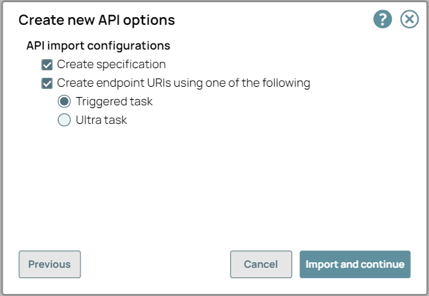
- Create Specification. If selected, the imported specification is included as a File Asset in the API.
- Create Endpoints from Path. If selected, endpoints for the new API are created
based on its path to one of the following:
- Triggered Task: Choose to make the API endpoint a Triggered Task.
- Ultra Task: Choose to make the API endpoint an Ultra Task.
- Click Import and Continue.
- In Create New API - Details, fill in the details for the new API.
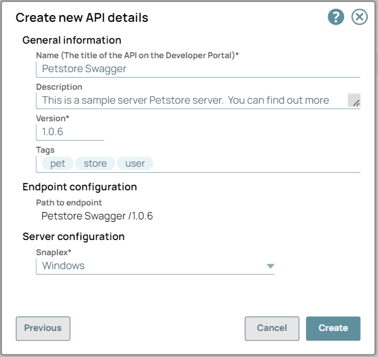
- General Info:
- Name (Title). The name of the new API. The name must meet the following requirements:
- Must be unique.
- Must begin with alphanumeric characters A-Z, a-z, or 0-9.
- Cannot contain the reserved keyword
shared. - Cannot contain |, <, >, [, ], {, }, #, ?, /, and \.
- Must be no more than 256 characters.
- If the name includes double-byte characters, the maximum length is shorter.
- Description. A description of the new API.
- Version. The version number for the first version of the API. Default: 1.0. Learn more: Managing Versions of Your APIs
- Tags. Enter any tags associated with your API. You can create the tags as required.
- Name (Title). The name of the new API. The name must meet the following requirements:
- Endpoint Configuration > Path to Endpoint. (Read-only) The base path for the endpoint.
- Server Configuration > Snaplex. The Snaplex to associate with the new API.
- General Info:
- Click Create.
Troubleshooting Section for API Specification file
Any structural or syntax issues in the API, API Version, or Proxy specification file results in an error in the SnapLogic UI. You can change the specifications according to the error message in the Swagger editor or any other editor tool.
| Entity | Error Messages for Incorrect JSON or YAML (OAS2.0 or OAS3.0) Specifications | Description and Resolution |
|---|---|---|
| API and Proxy |
Structural Error: Invalid or Incorrect Data: |
|
Example Workflow
- Create an API in the API Manager with the upload option. Upload the OAS 2.0 or
3.0 YAML or JSON API Specification file:
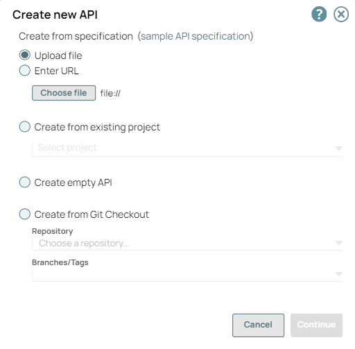
- If the file contains incorrect data or a broken code structure, an error occurs:
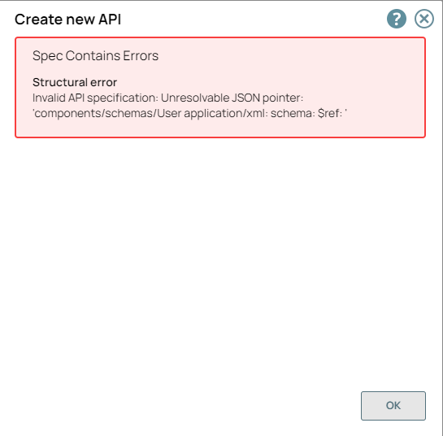
- You can edit the specification file in the Swagger editor:
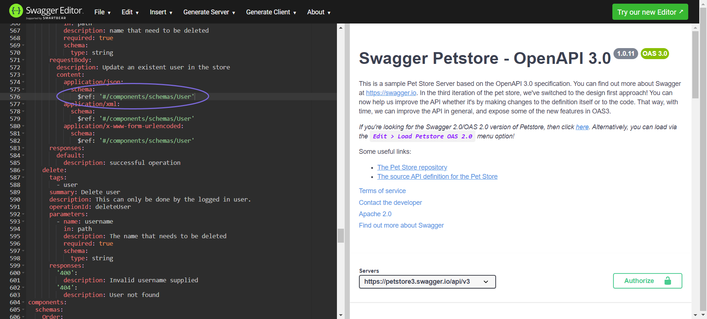
- After all the errors in the Swagger editor are fixed, the API is successfully created with the edited API specification file.
 Note: When you upload an incorrect data API or Proxy specification file it displays error
messages in the Create New API, Create Proxy, Swagger Editor of Publish API and Publish
Proxy wizards.
Note: When you upload an incorrect data API or Proxy specification file it displays error
messages in the Create New API, Create Proxy, Swagger Editor of Publish API and Publish
Proxy wizards.Create the API from Existing Project Assets
- In the API Manager page, under the APIs & Proxies tab, click the add icon and choose New API.
- In Create New API, choose Create from Existing
Project and select the Project.
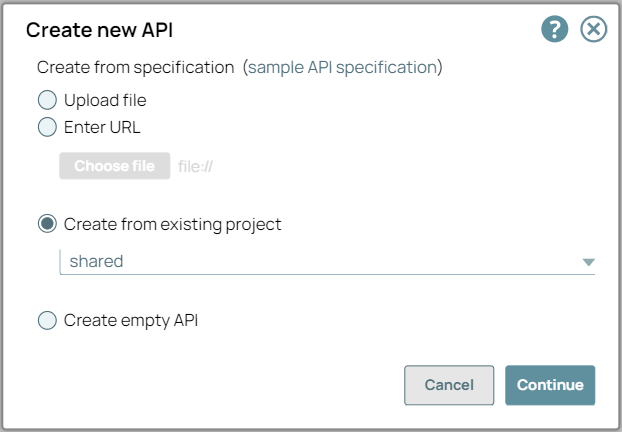
- Click Continue.
- In Create New API - Select Assets, select the types of assets
you want to import to the new API. An Asset selected at the root level also imports the
leaf-level Assets.
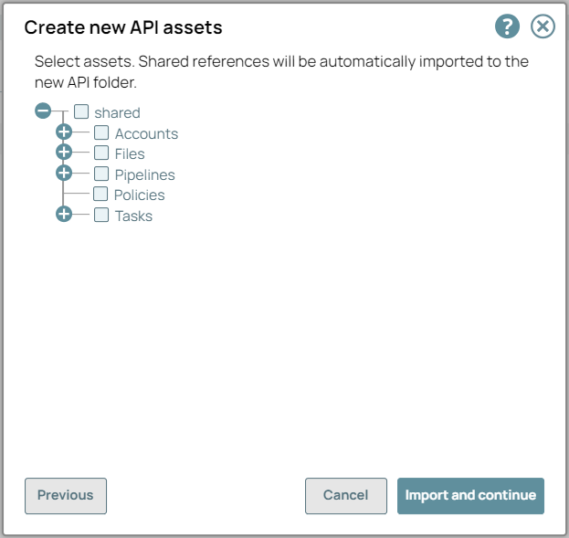
- Click Import and Continue.
- In Create New API - Details, fill in the details for the new API.
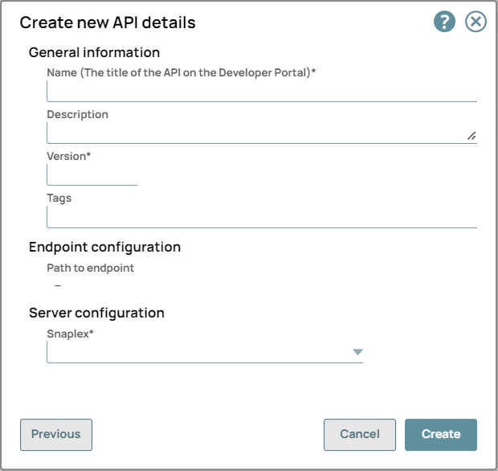
- General Info:
- Name (Title). The name of the new API. The name must meet the following requirements:
- Must be unique.
- Must begin with alphanumeric characters A-Z, a-z, or 0-9.
- Cannot contain the reserved keyword
shared. - Cannot contain |, <, >, [, ], {, }, #, ?, /, and \.
- Must be no more than 256 characters.
- If the name includes double-byte characters, the maximum length is shorter.
- Description. A description of the new API.
- Version. The version number for the first version of the API. Default: 1.0. Learn more: Managing Versions of Your APIs
- Tags. Enter any tags associated with your API. You can create the tags as required.
- Name (Title). The name of the new API. The name must meet the following requirements:
- Endpoint Configuration > Path to Endpoint. (Read-only) The base path for the endpoint.
- Server Configuration > Snaplex. The Snaplex to associate with the new API.
- General Info:
- Click Create.
Note:
- You receive an error message when the reference JAR file is incorrect or when the asset is not found.
- When you create an API from an existing project, the reference assets, including error pipelines and accounts, located in various folders or directories, and also the associated JAR files linked to the accounts, are automatically updated.
Create the API from a Git Repository
- In the API Manager page, under the APIs & Proxies tab, click the add icon and choose New API.
- In Create New API, choose Create from Git
Checkout.
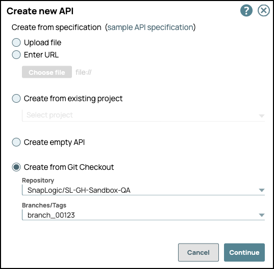
- Repository: Select the Git repository from the dropdown list.
- Branches/Tags: Choose an existing branch or create a new branch:
- Select the Branch or Tag to associate with your API.
- (Optional) Enter a name to create a new branch from
main.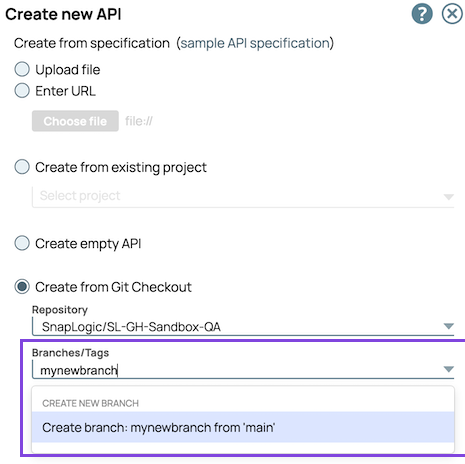
- Click Continue.
- In Create New API - Details, specify the details for the new API.
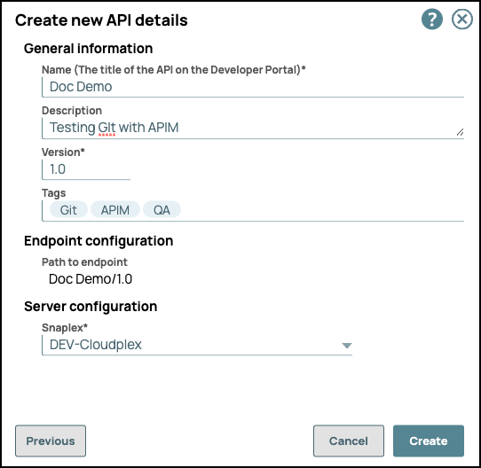
- General Info:
- Name (Title). The name of the new API. The name must
meet the following requirements:
- Must be unique.
- Must begin with alphanumeric characters A-Z, a-z, or 0-9.
- Cannot contain the reserved keyword
shared. - Cannot contain |, <, >, [, ], {, }, #, ?, /, and \.
- Must be no more than 256 characters. If the name includes double-byte characters, the maximum length is shorter.
- Description. A description of the new API.
- Version. The version number for the first version of the API. Default: 1.0.
- Tags. Enter any tags associated with your API.
- Name (Title). The name of the new API. The name must
meet the following requirements:
- Endpoint Configuration > Path to Endpoint. (Read-only) The base path for the endpoint.
- Server Configuration > Snaplex. The Snaplex to associate with the new API.
- General Info:
- Click Create.
- Navigate to the Assets tab of the API version to view the Git
repository associated with the API version assets.
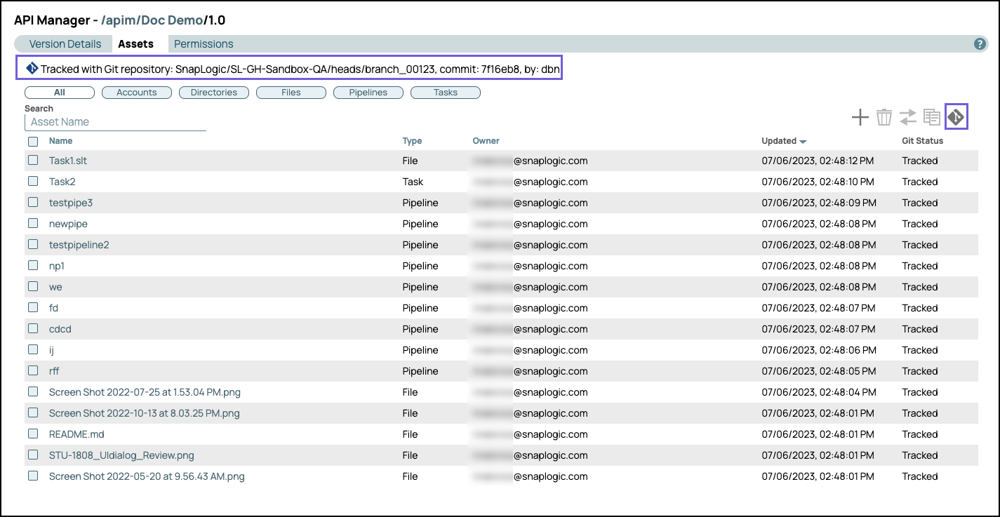
The following image shows a new branch:
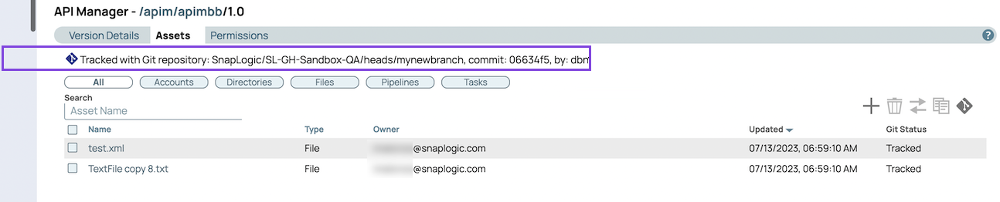
- Select an asset and click the git ops icon to view available Git operations.
Creating an Empty API
- In the API Manager page, under the APIs & Proxies tab, click the add icon and choose New API.
- Choose Create Empty API.
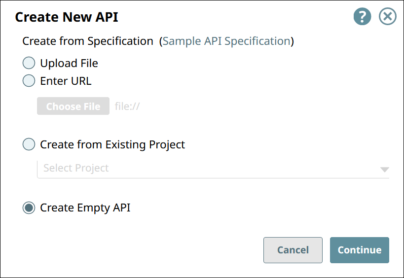
- Click Continue.
- In Create New API - Details, fill in the details for the new API.
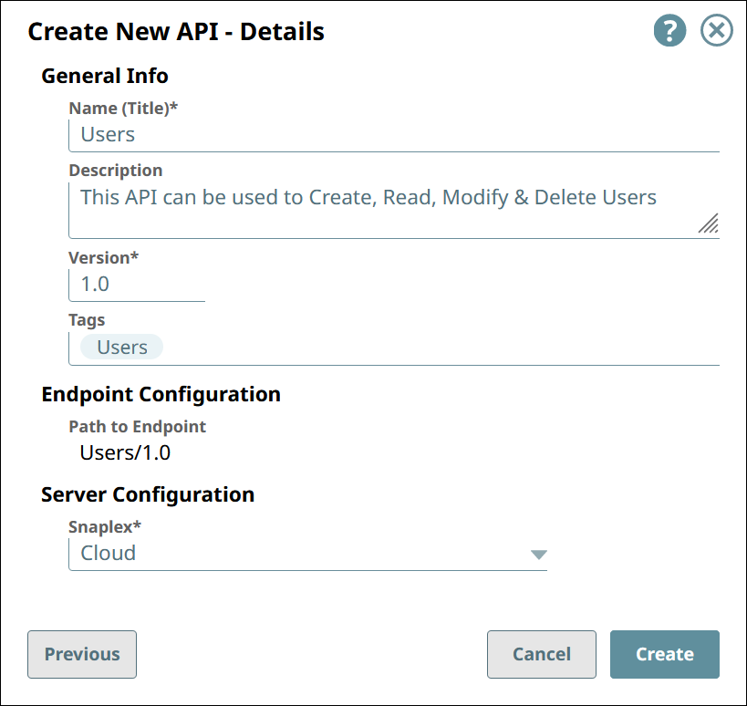
- General Info:
- Name (Title). The name of the new API. The name must meet the following requirements:
- Must be unique.
- Must begin with alphanumeric characters A-Z, a-z, or 0-9.
- Cannot contain the reserved keyword
shared. - Cannot contain |, <, >, [, ], {, }, #, ?, /, and \.
- Must be no more than 256 characters.
- If the name includes double-byte characters, the maximum length is shorter.
- Description. A description of the new API.
- Version. The version number for the first version of the API. Default: 1.0.
- Tags. Enter any tags associated with your API. You can create the tags as required.
- Name (Title). The name of the new API. The name must meet the following requirements:
- Endpoint Configuration > Path to Endpoint. (Read-only) The base path for the endpoint.
- Server Configuration > Snaplex. The Snaplex to associate with the new API.
- General Info:
- Click Create.
Creating an APIM API in IIP
You can create an APIM API in IIP through the following workflows:
- Designer
- Creating a Triggered Task
- Creating an Ultra Task
- Project Manager
- From a project or Project Space shared folder dropdown list
- Creating/editing a Triggered Task
- Creating/editing an Ultra Task
- Choose one of the following ways to open the dialog for a Triggered or Ultra Task:
- In the Designer tab, click the Task icon from the expanded
toolbar.
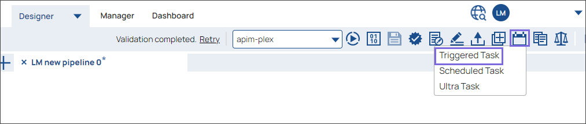
- In the Project Manager tab, navigate to the target project or global
sharedfolder, and In the assets table, do one of the following:- To create an APIM API from a task:
- For an existing Task, click on the target Task.
- Click the add icon and in the dropdown, select or . Alternatively, click the Tasks tab, then click the add icon and in the dropdown, select Triggered or Ultra. The task dialog for the task type you selected appears.
- Fill out the Task form with the appropriate information, then click
Save and create API.
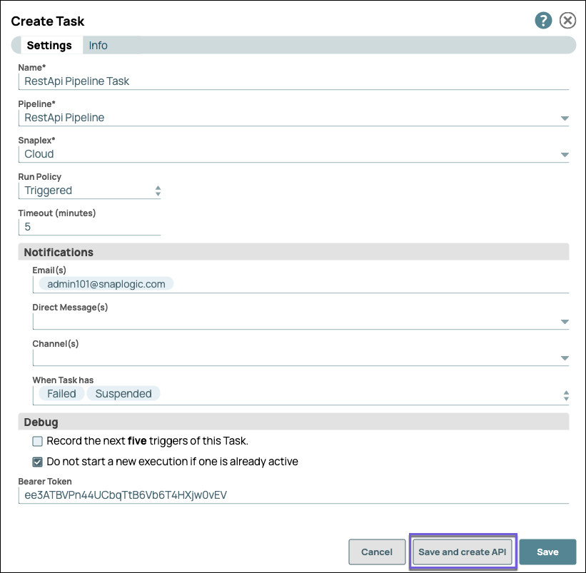
- To create an APIM API from a project or Project Space share folder, click
the dropdown icon to display the dropdown list, select Create
API:
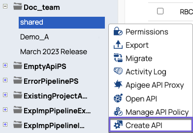
- To create an APIM API from a task:
- In the Designer tab, click the Task icon from the expanded
toolbar.
- In the Create new API assets, select the target assets to include in your API, and then
click Import and continue.
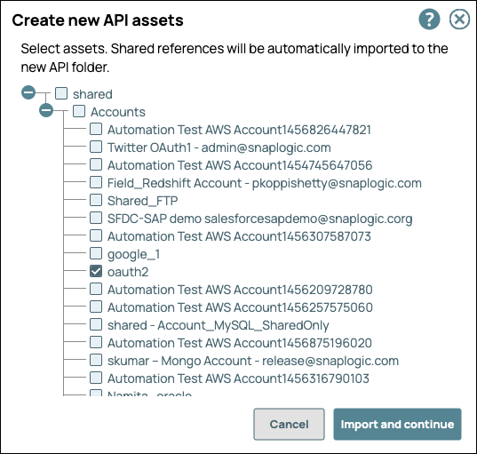
- In the Create new API details, enter the details.
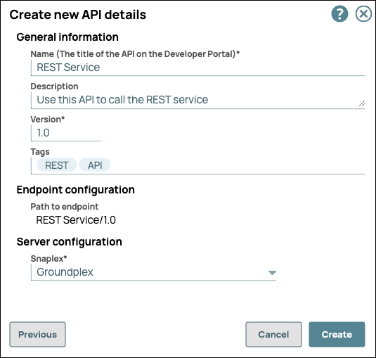
- General Info:
- Name (Title). The name of the new API. The name must
meet the following requirements:
- Must be unique.
- Must begin with alphanumeric characters A-Z, a-z, or 0-9.
- Cannot contain the reserved keyword
shared. - Cannot contain |, <, >, [, ], {, }, #, ?, /, and \.
- Must be no more than 256 characters. If the name includes double-byte characters, the maximum length is shorter.
- Description. A description of the new API.
- Version. The version number for the first version of the API. Default: 1.0.
- Tags. Enter any tags associated with your API.
- Name (Title). The name of the new API. The name must
meet the following requirements:
- Endpoint Configuration > Path to Endpoint. (Read-only) The base path for the endpoint.
- Server Configuration > Snaplex. The Snaplex to associate with the new API.
- General Info:
- Click Create.
- Navigate to the API Manager to verify API creation.
Edit an API Name
Rename the API to align with the company standards and best practices. Save the extra effort instead of copying the API to rename it and then deleting the old one.
- Navigate to .
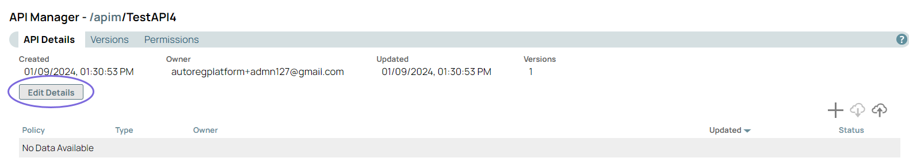
- Click Edit Details to rename the API:
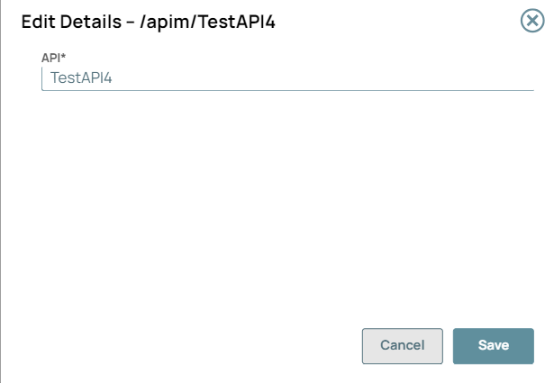
- Click Save. A message “API details has been updated successfully” displays in the UI.
Note:
- You can only rename the unpublished APIs. Published APIs cannot be renamed because that would change the endpoint URL of the API.
- Unpublish the API to edit the API name.
- Special characters such as |, <, >, [, ], {, }, #, ?, /, and \. cannot be used.
Enabling "Try It Out" for Your API
To allow API users to try out your API,
- A CORS Restriction policy must be defined.
- If is selected in Developer Portal settings, the default CORS Restriction policy is applied to all APIs in the Developer Portal. Learn how to select the setting. You must be an Environment admin to modify the Developer Portal settings.
- If not selected or if you want to override the default CORS Restriction policy, you can add your own CORS Restriction policy to your API or API version. Learn how to add and configure the CORS Restriction policy for "Try It Out".
- The API must be published. Learn how to publish your API.
The Try it out button appears only if these two requirements are met.
To test the Try it out button for your API: Discovering APIs in the API Catalog
Troubleshoot for “Try It Out” functionality
| Areas to troubleshoot when an error occurs | Error messages in the console | Resolution |
|---|---|---|
| CORS | Access to fetch is blocked by CORS policy: Request header field
authorization is not allowed by Access-Control-Allow-Headers in preflight
response. |
Note: The CORS policy with a default setting provides a standard
configuration. |
| Network Failure | Network Error |
Check the Network Connectivity. |
| URL scheme in CORS settings dialogue box | Mixed Content: The page was loaded over HTTPS, but requested an insecure
resource. This request has been blocked; the content must be served over
HTTPS. |
|
| FeedMaster and Load Balancer | Failed to load resource: net::ERR_NAME_NOT_RESOLVED |
|
Deleting an API from the API Manager Console
To delete an API, you must delete all versions and the assets in those versions. For details, see the following topics: